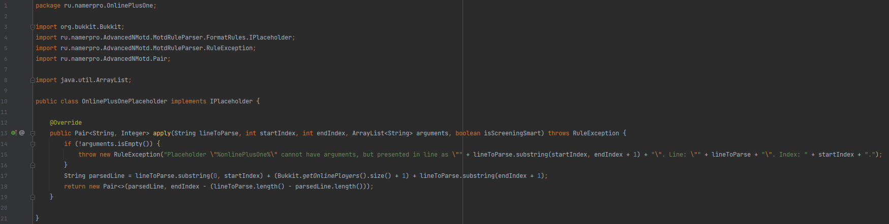

Preparing extension | AdvancedNMotd documentation
In this tutorial you will learn how to create and register your own custom placeholders.
In this page I will be demonstrating how to create placeholder %onlinePlusOne%, that returns value 1 player bigger than current online.
Firstly, you need to create function, that will be called when your placeholder is met and fill it with code.
This is how you do it: (click image to open it in new window)

In this code important parts are:
- We implement IPlaceholder interface by overriding its only function apply.
- Function apply contains the following arguments:
- lineToParse (String): line that contains our placeholder.
- startIndex (int): index to the begin '%' symbol of our placeholder.
- endIndex (int): index to the last '%' symbol of our placeholder.
- arguments (ArrayList): placeholder arguments that go after ':' symbol (list is empty when placeholder has no arguments).
- isScreeningSmart (boolean):
- We check whether our placeholder has valid arguments (both amount and presentation)
- After we did some work we return Pair with elements:
- String: line where our placeholder is replaced by its result.
- Integer: index right after content for which our placeholder was replaced.
It should be mentioned, that we can achieve same behaviour without creating an extension with the help of
diamond brackets.
Open
AdvancedNMotd/aliases/placeholders.yml file an add the following line there:
onlinePlusOne: ':'
This is stated here, because sometimes it can be easier to use this technology.